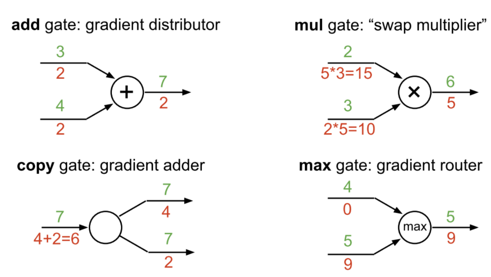
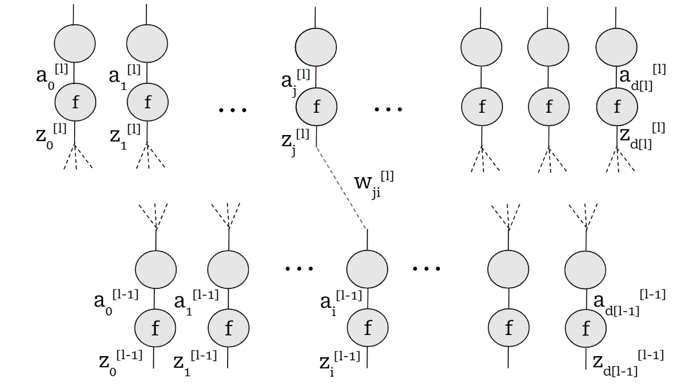
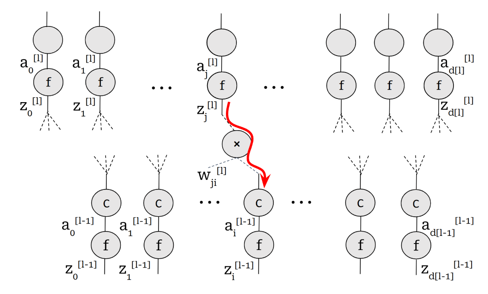
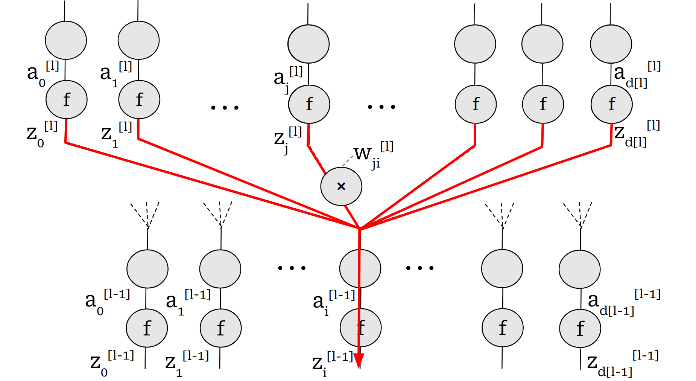

Backpropagation, Once and for all!
Welcome to My Ignorance, Examined, a series where I confront the gaps in my own understanding. Each time, I pick a topic I know nothing about, dive into the research, and share what I’ve learned. This is my journey from bewilderment to basic comprehension, and you’re along for the ride.
I’ve dreaded backpropagation ever since I saw the algorithm for the first time! Somehow, I managed to dislike it so much, it took me an extremely long time to even try to understand it. Not that it’s an extremely complicated topic — it’s just that the people who have once understood it don’t make the effort to actually transfer that knowledge!
A while back, after ignoring the topic for too long, I decided enough is enough. I’m a grown woman, and this is embarrassing. After about an hour in the library, searching through a dozen books and lecture notes, I finally came to my aha moment.
This is my attempt to explain backpropagation the way I think it should be explained.
So buckle up!
Computation Graphs
The first thing almost every lecture and source starts with is the idea of computation graphs.
I’m not going to linger on this, because my guess is this is not the core source of confusion. Most people grasp the concept of breaking a calculation into a graph of operations.
The real hurdle — the part that feels like a mental block — is what happens on that graph.
It’s the moment we stop moving forward and start moving backward.
What are we actually calculating in that backward pass? Why does chaining these derivatives together give us what we need?
That is the heart of the problem.
So let’s skip past the comfortable part and tackle the awkward one head-on.
Gradient Flow Through the Important Gates
In this section, I’m gonna refer to the slide most of you have probably seen and thought to yourself, “Oh, I get it.”

Before we dive into the details of the figure, let’s go over the chain rule.
I know, I know! Not just the simple chain rule you’ve been seeing all over the place though — I’m talking about the multivariable chain rule!
Chain Rule Refresher
For a scalar function \(L = f(g(x))\), the simple chain rule is:
\[\frac{dL}{dx} = \frac{dL}{dg} \cdot \frac{dg}{dx}\]For multivariable functions \(L = f(u, v)\) where \(u = u(x, y)\) and \(v = v(x, y)\):
\[\frac{\partial L}{\partial x} = \frac{\partial L}{\partial u} \frac{\partial u}{\partial x} + \frac{\partial L}{\partial v} \frac{\partial v}{\partial x}\]This is the foundation of the copy gate gradient flow.
Add Gate
This is pretty straightforward however you look at it.
In the given example, assume you want to take the derivative with respect to the upper input. Then our output function would be:
\[f(x) = x + 4\]Now we can compute the derivative of \(f\) with respect to \(x\) easily:
\[\frac{df}{dx} = 1\]So, the add gate copies the gradient into its inputs:
\[\frac{\partial L}{\partial x_1} = \frac{\partial L}{\partial y}, \quad \frac{\partial L}{\partial x_2} = \frac{\partial L}{\partial y}\]Multiply Gate (Mul Gate)
In the given example, assume you want to take the derivative with respect to the upper input. Then our output function would be:
\[f(x) = 3x\]So the derivative of the output with respect to this input (\(x\)) would be 3.
Mathematically, if \(y = x_1 \cdot x_2\), then:
\[\frac{\partial y}{\partial x_1} = x_2, \quad \frac{\partial y}{\partial x_2} = x_1\]Hence, during backpropagation:
\[\frac{\partial L}{\partial x_1} = \frac{\partial L}{\partial y} \cdot x_2, \quad \frac{\partial L}{\partial x_2} = \frac{\partial L}{\partial y} \cdot x_1\]Max Gate
Take the input that is the current maximum.
In the neighborhood of this input, when we take epsilon steps, the output would be \(f(x) = x\).
Now take the other input. In the epsilon neighborhood of this input, no matter how we change it, the output is a constant \(c\) (the other input).
So \(f(x) = c\), and our gradient is zero.
Formally, if \(y = \max(x_1, x_2)\):
\[\frac{\partial y}{\partial x_1} = \begin{cases} 1 & \text{if } x_1 > x_2 \\ 0 & \text{otherwise} \end{cases}, \quad \frac{\partial y}{\partial x_2} = \begin{cases} 1 & \text{if } x_2 > x_1 \\ 0 & \text{otherwise} \end{cases}\]Copy Gate
Onto the most difficult gate for me to grasp!
At the core of this gate lies the multivariable chain rule.
If a variable \(x\) is copied to multiple outputs \(y_1, y_2, \dots, y_n\):
Each copy contributes additively to the gradient — this is why gradients accumulate during backpropagation.
Visualize, Once and for All
Now that we fully understand how the gradient flows through these gates, let’s draw a neural network entirely in terms of these gates and nothing more.
Then, backpropagation is as close as it can be to obvious!

First, let’s set our terminology and notation straight:
- \(j^{th}\) activation of layer $l$ : \(a^{[l]}_j=f(z_j^{[l]})\)
- \(j^{th}\) pre-activation of later \(l\): \(z^{[l]}_j = \sum_{i=1}^{d[l-1]} w_{ji}a^{[l-1]}_i\)
- Loss function: \(L\)
- Number of neurons of layer \(l\): \(d[l]\)
Backpropagation, Finally!
Backpropagation basically has two parts you need to understand.
Part 1: Gradient of the Loss with Respect to Any Given Weight
Basically, our objective is to calculate the gradient of the loss with respect to any given weight. This is the part where visualization makes our lives very easy! As you can see in the figure, we want to calculate gradient with respect to one of the inputs to a mul gate. So all we have to do is to calculate the gradient with respect to output and multiply it by the other input of the gate which is our activation value we have calculated in the forward pass. So far so good!

Our objective is to calculate the gradient of the loss with respect to any given weight \(W^{[l]}_{ji}\):
\[\frac{\partial L}{\partial W^{[l]}_{ji}} = \frac{\partial L}{\partial z^{[l]}_j} a_i^{[l-1]}\]This means:
The gradient of the loss with respect to the weights equals the gradient flowing into the layer times the activation from the previous layer.
Part 2: Derivative of the Loss with Respect to Pre-Activation Values
Now we need to calculate \(\frac{\partial L}{\partial z^{[l]}_j}\). This is done in a recursive manner.

Basically, every pre-activation value at each layer goes through several gates:
- Activation function
- Copy gate and mul gate for each copy thread
The term \(\frac{\partial a^{[l-1]}_i}{\partial z^{[l-1]}_i}\) can be calculated easily:
\[\frac{\partial a^{[l-1]}_i}{\partial z^{[l-1]}_i} = f'(z^{[l-1]}_i)\]So now we can calculate \(\frac{\partial L}{\partial z^{[l-1]}_i}\) terms from \(\frac{\partial L}{\partial z^{[l]}_i}\) terms.
Thanks for reading! Hopefully, this explanation helps make backpropagation finally click.